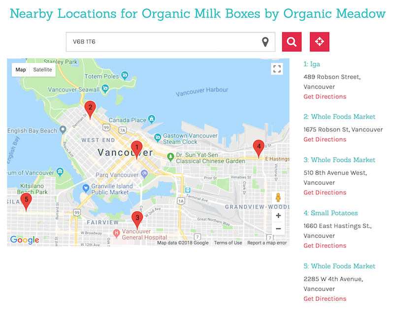

The store locator is unique in that it does not rely entirely on one service for it's operation. Whenever an address is added into the database, the Automation Engine caches address data with geolocation coordinates (currently Google, but theoretically any service could substitute). When the store locator is queried, PostGIS does a great circle calculation to the nearest locations and returns with a top list including metadata. On the front end it overlays our data on top of a google map. However, since the data is ours, it would be trivial to switch to another service for visualization such as Apple Maps, or OpenStreetMap should usage terms change in the future.
